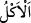

söylenecek sözün Peygamberimiz (s.a.)’e aktarılmasıdır.
“ aslında az yenilen şeyler hakkında, “ ise çok yenilen şeyler hakkında
kullanılsa da birçok şey için ıstılah olarak kullanılır olmuştur.
et-Te’vîlâtü’n-Necmiyye’de der ki: “Âyette işâret edilmektedir ki kalbini
ağyâra/başkalarına bağlayan, kurnazca davranarak, şekil ve sûretlerden yardım
isteyerek hâlinin iyi olduğunu zannedenlerin kalplerinden Allah rahmeti söküp alır.
Onları terk eder ve hallerini bozar. Bu şekil ve sûretlerin onlara bir yardımı olmaz.
Yine onlar işlerinde akıl ve basiret sâhibi olamazlar. Allah’a da dönemezler. Allah’a
dönüş ancak dünyada olabilir. Eğer O’na âhirette dönerlerse Allah onlara merhamet
etmez, icâbet etmez. Allah’tan başkasına tapan zâlimler oldukları için Allah onlara
uzaklık ve ayrı kalma azabını tattırır.
Ahmed b. Harb der ki: “Hak Teâlâ insanları, kendisini tek olarak tanımaları ve ortak
koşmamaları için yarattı. Onlara rızık verdi ki O’nu Rezzâk olarak tanısınlar. Onları
öldürür ta ki O’nu Kahhâr olarak bilsinler. Görmez misin ki ölüm nice zorbaları zelil
eder ve firavunları kahreder. Onları diriltir, ta ki O’nu Kâdir olarak tanısınlar. Çünkü
Kâdir-i mutlak O’dur. İnsan kendi aczini, tâkatinin yokluğunu, Hakk’ın kahrının altında
olduğunu bilmelidir. Hakk’a ıztırâr/zor ile değil, ihtiyâr/kendi irâdesi ile dönmelidir.
Her işin başarılmasını Hak’tan bilmelidir.”
Sâib, halkın yardımıyla hiçbir iş çözülmedi.
Biz artık halktan Hakk’a çevirdik yüzümüzü.
Bilesin ki cinlere tapan ve Allah’ın dîninin yok olmasını isteyen şeytana itâat eden
kimsenin azâbı, İblis’in azâbı gibi ebedî olur. Kim de nefsinin isteği olan ma’sıyet
konusunda ona itâat ederse onun azâbı, Allah’tan ayrı kalmak olur. Kim hevânın arzu
ettiği şehvetler konusunda ona itâat ederse hesabı şiddetli olur. İblis’e icâbet eden,
Mevlâ’yı kaybeder. Nefsine icâbet edenden, vera’ gider. Hevâya icâbet edenin aklı
gider.
Yahyâ (a.s.) Allah katındaki değerinin yüksekliğine ve hata işleme isteği olmamasına
rağmen cehennem azabından korkar ve gece gündüz göz yaşı dökerdi. Gâfil insan bu
kadar çok isyanı olduğu halde, bir de şeytan gibi bir düşmanı varken îmanının soyulup
alınmasından nasıl emin olur? Öyleyse bütün hallerde Allah’tan başkasına meyl
etmekten tevbe etmek, sabah akşam Allah’a yakarıp ağlamak lazımdır. Böylece
cehennem ateşinden kurtuluş, cennetin derecelerini elde etme, Allah’a yakınlık (kurb) ve
Rahmân’ı müşâhede nimetleriyle nimetlenme hâsıl olsun.
Aynanın arkasında muradın yüzü görülmez.
Senin yüzün halka dönük, Hak’tan ne haberin var?